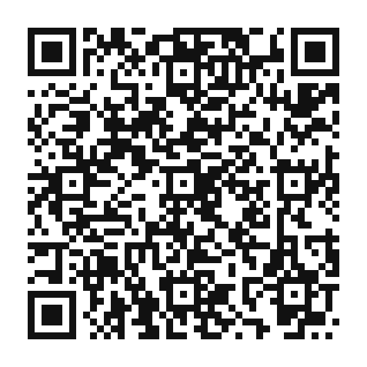

Download the console
Each card's QR code opens a platform-specific one-page brief (requirements, install steps, first-run notes), readable on a phone — never a 100 MB download. The QR codes are displayed large on purpose: scan one directly from your screen with a phone, or — when this page is projected (talk, class, demo) — let the room capture it from their seats. To get a bundle, use the download buttons on this page — and after scanning, check the address bar.
Windows 10/11 · x64
Standalone console, 122 MB (zip)

Scan for install brief — screen or projection
QR → https://github.com/FBerthommier/covtl-console/blob/main/docs/brief-windows.md
Download for WindowsDirect link: https://github.com/FBerthommier/covtl-console/releases/download/windows-standalone/COVTL-Console-Windows-x64.zip
Desktop-only download — open covtl.org on a computer to get the zip.
The QR code opens a one-page brief in your phone's browser (no 100+ MB download) — scan it from the screen, or capture it when this page is projected. Use the button on this page to get the zip. After scanning, read the address bar: official pages live on github.com/FBerthommier/…
sha256 10da03bf85ba4ef1666d0075def1ac4a4cbc19956acce380eaad31bede52567b
Linux · x64
Standalone console, 192 MB (zip)

Scan for install brief — screen or projection
QR → https://github.com/FBerthommier/covtl-console/blob/main/docs/brief-linux.md
Download for LinuxDirect link: https://github.com/FBerthommier/covtl-console/releases/download/linux-standalone/COVTL-Console-Linux-x64.zip
Desktop-only download — open covtl.org on a computer to get the zip.
The QR code opens a one-page brief in your phone's browser (no 100+ MB download) — scan it from the screen, or capture it when this page is projected. Use the button on this page to get the zip. After scanning, read the address bar: official pages live on github.com/FBerthommier/…
sha256 4d7451aeb5841d359f58f989b86c44651e7a3e687472756c775806c122c57d10
macOS · Apple Silicon
Standalone console, 98 MB (zip)

Scan for install brief — screen or projection
QR → https://github.com/FBerthommier/covtl-console/blob/main/docs/brief-macos.md
Download for macOSDirect link: https://github.com/FBerthommier/covtl-console/releases/download/macos-standalone/COVTL-Console-macOS.zip
Desktop-only download — open covtl.org on a computer to get the zip.
Right-click the app > Open the first time (unsigned build). Requires macOS 11+, M1/M2/M3/M4.
sha256 810836e371eb9d4399a1224524e7163defe3593c5821616e7505f1233371d6f2
Documentation

QR → https://github.com/FBerthommier/covtl-console/tree/main/docs
User & technical manuals
Full manuals, validation reports, the one-page brief (installation paths hub) — and the NotebookLM notebook gathering all the COVTL documentation in one queryable place.
Python users — one command
Unzip the archive, run covtl-console.exe (Windows),
./covtl-console (Linux) or open
COVTL Console.app (macOS), and open
http://127.0.0.1:8421 in your browser.
Or, with Python 3.9+ already installed:
pip install covtl
Then: vtl-synth run "this is easy for us" -o out
— or covtl-console for the same web interface.
The engine follows the active profile language (fr by
default on a fresh install) — add -l en for the English
pronunciation.
Verify your download
Check the SHA-256 of the file you downloaded against these values:
10da03bf85ba4ef1666d0075def1ac4a4cbc19956acce380eaad31bede52567b
4d7451aeb5841d359f58f989b86c44651e7a3e687472756c775806c122c57d10
810836e371eb9d4399a1224524e7163defe3593c5821616e7505f1233371d6f2
certutil -SHA256 COVTL-Console-Windows-x64.zip (Windows) sha256sum COVTL-Console-Linux-x64.zip (Linux) shasum -a 256 COVTL-Console-macOS.zip (macOS)
Each release asset also carries a
Sigstore build-provenance attestation signed by the
project's GitHub CI — verify it independently of the download channel
(gh ≥ 2.46):
gh attestation verify COVTL-Console-Windows-x64.zip -R FBerthommier/covtl-console gh attestation verify COVTL-Console-Linux-x64.zip -R FBerthommier/covtl-console gh attestation verify COVTL-Console-macOS.zip -R FBerthommier/covtl-console